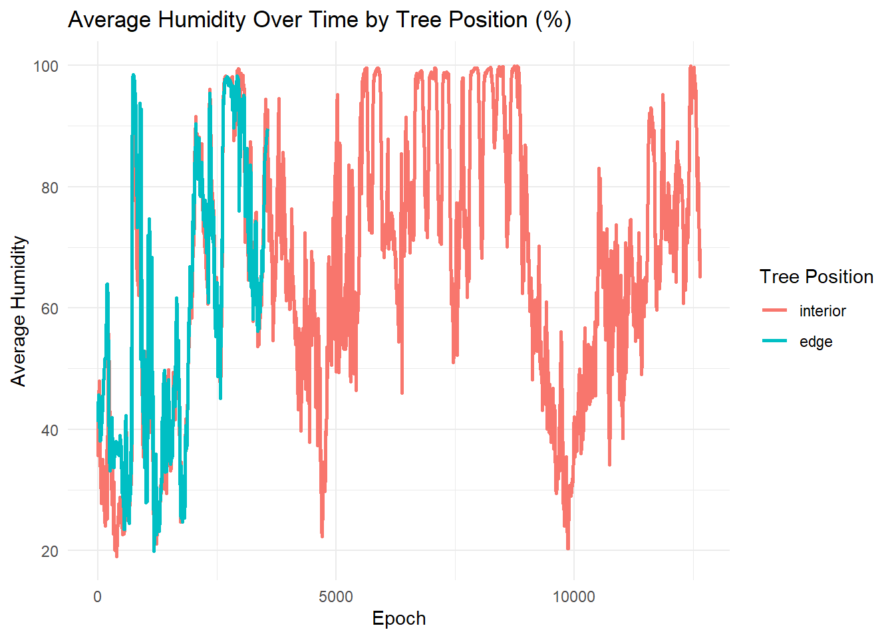
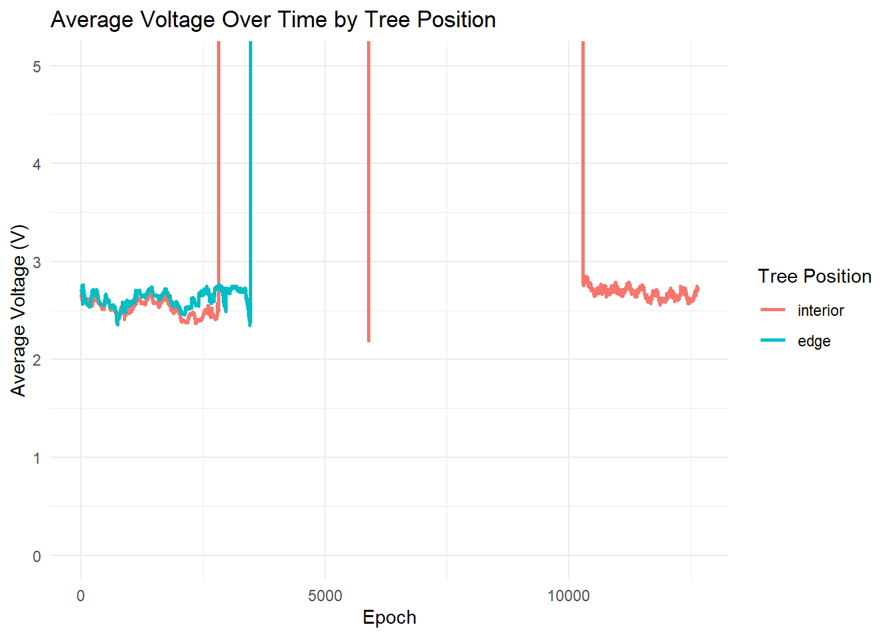
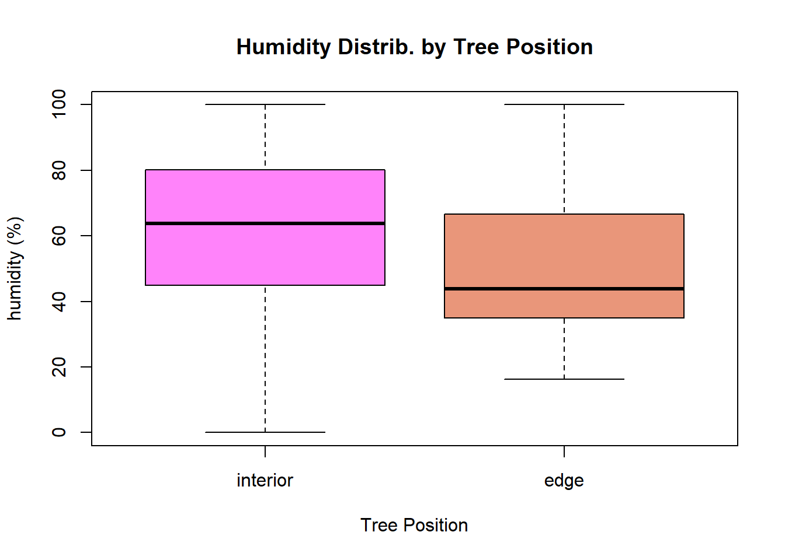

Understanding how forest structure and specific climate conditions influence tree growth is a key question in forest ecology. In redwood forests, trees near the edge of the forest may experience different environmental conditions. These can include greater sunlight exposure or humidity levels, compared to trees in the interior. These differences in the position can contribute to overall variation within the position of the trees that are currently being studied in modern day with wireless sensor networks (WSNs) that collect environmental data over time.
Advances in WSN have made it possible for monitoring environmental conditions. By deploying sensor nodes, researchers can capture how microclimatic conditions vary across locations over time. However, studying these patterns can be challenging due to sensor data being incomplete, noisy, and restricting. Sensor data can lack context regarding external factors and user-interaction, making it difficult to explore patterns further.
A study concluded by Gilman Tolle (Tolle et. al) have conducted extensive sensor measurements in redwood forests, providing environmental data such as humidity. Humidity is a key variable influencing physiological stress in redwood trees. Differences in humidity between forest edge and interior locations can affect growth. Battery voltage is also another variable measured across sensor nodes. Although it is not an environmental variable, it remains critical as it provides information about sensor reliability to help distinguish meaningful environmental patterns caused by sensor failure.
This research provides a valuable framework to examine how environental conditions differ across forest positions while also evaluating how reliable sensor measurements are in the process. This lab investigates the research question, “To what extent do environmental sensor measurements such as humidity, differ between edge and interior tree positions over time, and how might sensor performance influence these observed patterns?
To address this question, tree-level measurements from mote-location-data.txt and environmental sensor data from Sonoma datasets including all, log, and net, were used in connection with the framework described in Tolle et al. (2005). Sensor measurements between edge and interior locations while observing their dynamics will be compared. By combining these datasets, we aim to characterize both microclimatic variation and the role of sensor performance in shaping observed environmental patterns.
Data Overview and Collection
The data used in this lab comes from the 2004 “Macroscope in the Redwoods” study (Tolle et. al 2005), authored by Gilman Tolle. In the study, a WSN was installed on redwood trees to collect environmental conditions over time. WSNs have allowed for monitoring variations in environmental measurements across different forests.
Small sensor nodes called “motes,” recorded environmental measurements are regular interval with a variable “epoch,” that represents time indexed measurement periods. Environmental variables included humidity, adjusted humidity, and humidity measurements from sensors place at the top and bottom of the tree. Additional variables include battery voltage to assess equipment functionality and data quality. Each sensor node is uniqely identified by a variable called, “nodeid.”
The respective motes recorded environmental variables such as humidity and temperature associated with the humidity sensor and temperature adjusted humidity. Other variables include result time and nodeid. Measurements were recorded at regular time intervals and indexed using an epoch variable which serves as a placeholder for time and allows for observations across the sensors. Each sensor node is identified by a unique node id, “nodeid,” and was deployed at a fixed depth. Measurements from vertically separated sensors include “hama_top” and “hama_bot” to capture microclimate variation. Additional variables such as battery voltage and network routing were used to assess data quality and sensor reliability.
Despite its strengths, it’s important to note the dataset’s limitations. The large sensor data are raw and contains numerous missing values, outliers, and measurement inconsistencies, requiring careful cleaning and analysis. There are more than likely to be sensor voltage fluctuations and noisy readings that reflect hardware issues rather than true environmental influence. Additionally, tree height are constantly changing with the seasons, even when it is not visible from the outside. Overall, the observational nature of data means that causal relationships between microclimate and tree height cannot be definitively established. Unmeasured factors like soil conditions may also influence observed patterns.
When observing the raw sensor data sets, it was evident that the data sets contained missing values, repeated measurements, and implausible observations that required cleaning prior to analysis. Several data cleaning steps were performed to ensure that the data reflected meaningful environmental conditions.To start the process, the Sonoma redwood forest datasets including “all,” “log,” and “net,” were combined into one dataset. Mote location data were then joined to the environment data using a shared node identifier called “nodeid,” to classify each sensor as interior or edge tree position. This step was necessary for directly comparing environmental conditions between forest positions.
Throughout the cleaning process, it was observed that sensor nodes repeatedly recorded measurements per node and time period. Therefore, observations were aggregated to one value per node, epoch, and tree position by calculating the mean of the numeric variables. The mean was calculated because the mean preserved the average signal over time. Sensors inevitably record small fluctuations. The mean will help smooth short-term nose and retain gradual trends. It was determined that it was appropiate for humidity due to it being a continuous variable.
Missing values were handled by excluding “NA” values during aggregation. This allows available measurements to contribute to summary statistics.
It is also important to note that humidity cannot be less than zero, although it can get close to zero percent. This is due to Earth’s present climate. Water vapor is present in the air. This makes it so humidity values outside the plausible range of 0-100% removed prior to analysis. Most likely, these values reflect sensor error rather than real environmental conditions. If they were included, it would distort visualizations and summary statistics. Battery voltage values were retained, including extreme values, as these measurements provide insight into sensor performance and data availabilitY rather than environmental conditions.
These data steps produced a consistent and reproducible dataset suitable for exploratory analysis of microclimatic patterns and sensor reliability.
Show Code
# load dates datalibrary("ggplot2")dates_df <-clean_dates_data(dates_orig)# load motes datamotes_df <-clean_mote_location_data(motes_orig)# load redwood dataredwood_all_df <-clean_redwood_data(redwood_all_orig)redwood_net_df <-clean_redwood_data(redwood_net_orig)redwood_log_df <-clean_redwood_data(redwood_log_orig)# R data cleaning processsonoma_all <- redwood_all_dfsonoma_log <- redwood_log_dfsonoma_net <- redwood_net_dfsonoma_combined <-rbind(sonoma_all, sonoma_log, sonoma_net)mote <- motes_dfnames(mote)[names(mote) =="ID"] <-"nodeid"mote$position <-factor(tolower(as.character(mote$Tree)), levels =c("interior", "edge"))sonomojoin <-merge(sonoma_combined, mote[, c("nodeid", "position")], by ="nodeid")no_impute <-c("humidity", "humid_temp", "humid_adj", "hamatop", "hamabot")for (col innames(sonomojoin)) {if (is.numeric(sonomojoin[[col]]) &&!(col %in% no_impute)) {sonomojoin[[col]][is.na(sonomojoin[[col]])] <-median(sonomojoin[[col]], na.rm =TRUE)}}sonomojoin_clean <-aggregate(.~ nodeid + epoch + position, data = sonomojoin, FUN =function(x) if (is.numeric(x))mean(x, na.rm =TRUE)else x[1])sonomojoin_clean <- sonomojoin_clean[sonomojoin_clean$humidity >=0& sonomojoin_clean$humidity <=100,]agg_humidity <-aggregate(humidity ~ position + epoch, data = sonomojoin_clean, FUN =function(x) mean(x, na.rm =TRUE))agg_voltage <-aggregate(voltage ~ position + epoch, data=sonomojoin_clean, FUN =function(x) mean(x, na.rm=TRUE))
Exploratory Data Analysis
To explore differences in microclimate between forest edge and interior positions, exploratory data analysis (EDA) was conducted to investigate differences between edge and interior redwood tree positions and to assess the influence of sensor performance on observed patterns.
Average humidity was observed over time and across tree positions using a time series plot where humidity values were aggregated by tree position and epoch using the mean. This visualization revealed that interior trees consistently experienced high humidity levels across most epochs. Edge trees exhibited lower humidity and greater short-term variability as seen by it’s cut off in the visual. These patterns suggest that interior forest environments retain moisture effectively, most likely due to reduced exposure to wind and direct sunlight. Edge trees are subject to more fluctuating atmospheric conditions.
Additionally, battery voltage was examined to evaluate sensor reliability and data availability. Voltage values were aggregated by tree position and epoch. This was visualized using a time series plot. An important note that each type of battery systems have different ranges, with cars being 12-13V. Wireless sensor networks are typically operating around 2-3V. This visualization was scaled to a typical operating range of 0-5V to avoid distortion from extreme values association with fluctations. Within this range, voltage remained stable around 2-3V meaning normal activities. However, edge sensors produced a shorter coverage compared to intersior sensors as seen by the cut off. There are many possible causes of this. Power loss, network traffic, etc. This highlights an important limitation of the datset. Differences in sensor performance and data coverage may influence interpretation of trends.
Overall, these exploratory analyses demonstrate that interior redwood trees experience more humid and stable microclimatic conditions than edge trees. It also suggests that accounting for sensor reliability is crucial when researching forest conditions from wireless sensor networks.
Show Code
ggplot(agg_humidity, aes(x = epoch, y = humidity, color = position)) +geom_line(linewidth =1) +labs(title ="Average Humidity Over Time by Tree Position (%)",x ="Epoch", y ="Average Humidity", color ="Tree Position") +theme_minimal()

Figure 1. Average humdity over time (epoch) by tree position. Interior trees show consistently higher humidity than edge trees, indicating distinct microclimatic conditions between forest interior and edge trees.
Show Code
ggplot(agg_voltage, aes(x = epoch, y = voltage, color = position)) +geom_line(linewidth =1) +coord_cartesian(ylim=c(0,5)) +labs(title ="Average Voltage Over Time by Tree Position",x ="Epoch", y ="Average Voltage (V)", color ="Tree Position") +theme_minimal()

Figure 2. Average battery over time by treeposition, zoomed to 0.5 V to highlight typical sensor operating values. Voltage is generally stable around 2-3 V. Shorter coverage for edge sensors due to differences in sensor time that might have affected raw data.
Show Code
boxplot(humidity ~ position, data=sonomojoin_clean, col=c("orchid1", "darksalmon"), xlab="Tree Position", ylab="humidity (%)", main="Humidity Distrib. by Tree Position")

A box plot representation of distribution of humidity values by tree position. Interior trees have a higher median humidity than edge trees supporting the fact that forest interiors retain more moisture than forest edges.
Conclusion
Overall, the analysis investigated how microclimatic conditions differ between edge and interior redwood trees using sensor data collected from WSNs. The results from EDA process showed that interior tree locations consistently experience higher and more stable humidity levels compared to edge trees.
Important takeaways were of battery voltage highlighting differences in sensor performace over time. It showed especially shorter data coverage for edge sensors. This is underlines the importance of understanding that hardware limitations can shape the patterns observed in WSNs.
For future work, temperature, soil conditions, or seasonal data, could be incorporated to quantify differences. More sophisticated methods could also be used to impute missing values. Using more advanced methods would further improve understanding the influence of microclimatic conditions influence redwood forest structure and growth.
References
“Aggregate: Compute Summary Statistics of Data Subsets.” RDocumentation, www.rdocumentation.org/packages/stats/versions/3.6.2/topics/aggregate. Accessed 6 Feb. 2026.
Alex Douglas, Deon Roos. “4.2 Simple Base R Plots | An Introduction to R.” 4.2 Simple Base R Plots, 15 Jan. 2026, intro2r.com/simple-base-r-plots.html.
Holtz, Yan. “An Overview of Color Names in R.” Www.r-Graph-Gallery.com, 2018, r-graph-gallery.com/42-colors-names.html.
“How to Use Aggregate Function in R.” GeeksforGeeks, GeeksforGeeks, 11 July 2025, www.geeksforgeeks.org/r-language/how-to-use-aggregate-function-in-r/.
Holtz, Yan. “Boxplot.” The R Graph Gallery, r-graph-gallery.com/boxplot.html. Accessed 6 Feb. 2026.
“How to Specify Fun Used in by( ) or Related Apply( ) Functions.” Stack Overflow, https://stackoverflow.com/#organization, 13 Oct. 2011, stackoverflow.com/questions/7756856/how-to-specify-fun-used-in-by-or-related-apply-functions.
https://github.com/tidyverse/dplyr/issues/4448
Li, Yiquan, and Zezhong Fan. “EDAV Fall 2021 Tues/Thurs Community Contributions.” Chapter 107 Base r vs. Ggplot2 Visualization, Github, 19 Oct. 2022, jtr13.github.io/cc21fall2/base-r-vs.-ggplot2-visualization.html.
“R Legend Placement in a Plot.” Stack Overflow, https://stackoverflow.com/#organization, 19 Nov. 2019, stackoverflow.com/questions/8929663/r-legend-placement-in-a-plot.
Skilling, Tom. “Is a Humidity of Zero Percent Possible? | WGN-TV.” Is a Humidity of Zero Percent Possible, Chicago’s Very Own WGN9, 13 Sept. 2021, wgntv.com/weather/weather-blog/is-a-humidity-of-zero-percent-possible/.
Source Code
---title: "Lab 1 - Redwood Trees"author: "Anna Pham"format: html: code-fold: true code-summary: "Show Code" code-tools: true theme: sandstonetoc: trueexecute: warning: false message: false---```{r setup, include=FALSE}here::i_am("notebooks/lab1.qmd")# source all functions from R/ folderfor (fname inlist.files(here::here("R"), pattern ="*.R")) {source(here::here(file.path("R", fname)))}# path to dataDATA_PATH <- here::here("data")```# IntroductionUnderstanding how forest structure and specific climate conditions influence tree growth is a key question in forest ecology. In redwood forests, trees near the edge of the forest may experience different environmental conditions. These can include greater sunlight exposure or humidity levels, compared to trees in the interior. These differences in the position can contribute to overall variation within the position of the trees that are currently being studied in modern day with wireless sensor networks (WSNs) that collect environmental data over time. Advances in WSN have made it possible for monitoring environmental conditions. By deploying sensor nodes, researchers can capture how microclimatic conditions vary across locations over time. However, studying these patterns can be challenging due to sensor data being incomplete, noisy, and restricting. Sensor data can lack context regarding external factors and user-interaction, making it difficult to explore patterns further. A study concluded by Gilman Tolle (Tolle et. al) have conducted extensive sensor measurements in redwood forests, providing environmental data such as humidity. Humidity is a key variable influencing physiological stress in redwood trees. Differences in humidity between forest edge and interior locations can affect growth. Battery voltage is also another variable measured across sensor nodes. Although it is not an environmental variable, it remains critical as it provides information about sensor reliability to help distinguish meaningful environmental patterns caused by sensor failure.This research provides a valuable framework to examine how environental conditions differ across forest positions while also evaluating how reliable sensor measurements are in the process. This lab investigates the research question, "To what extent do environmental sensor measurements such as humidity, differ between edge and interior tree positions over time, and how might sensor performance influence these observed patterns? To address this question, tree-level measurements from mote-location-data.txt and environmental sensor data from Sonoma datasets including all, log, and net, were used in connection with the framework described in Tolle et al. (2005). Sensor measurements between edge and interior locations while observing their dynamics will be compared. By combining these datasets, we aim to characterize both microclimatic variation and the role of sensor performance in shaping observed environmental patterns.# Data Overview and CollectionThe data used in this lab comes from the 2004 "Macroscope in the Redwoods" study (Tolle et. al 2005), authored by Gilman Tolle. In the study, a WSN was installed on redwood trees to collect environmental conditions over time. WSNs have allowed for monitoring variations in environmental measurements across different forests.Small sensor nodes called "motes," recorded environmental measurements are regular interval with a variable "epoch," that represents time indexed measurement periods. Environmental variables included humidity, adjusted humidity, and humidity measurements from sensors place at the top and bottom of the tree. Additional variables include battery voltage to assess equipment functionality and data quality. Each sensor node is uniqely identified by a variable called, "nodeid."The respective motes recorded environmental variables such as humidity and temperature associated with the humidity sensor and temperature adjusted humidity. Other variables include result time and nodeid. Measurements were recorded at regular time intervals and indexed using an epoch variable which serves as a placeholder for time and allows for observations across the sensors. Each sensor node is identified by a unique node id, "nodeid," and was deployed at a fixed depth. Measurements from vertically separated sensors include "hama_top" and "hama_bot" to capture microclimate variation. Additional variables such as battery voltage and network routing were used to assess data quality and sensor reliability. Despite its strengths, it's important to note the dataset's limitations. The large sensor data are raw and contains numerous missing values, outliers, and measurement inconsistencies, requiring careful cleaning and analysis. There are more than likely to be sensor voltage fluctuations and noisy readings that reflect hardware issues rather than true environmental influence. Additionally, tree height are constantly changing with the seasons, even when it is not visible from the outside. Overall, the observational nature of data means that causal relationships between microclimate and tree height cannot be definitively established. Unmeasured factors like soil conditions may also influence observed patterns.```{r load-data}# load dates datadates_orig <-load_dates_data(DATA_PATH)# load motes datamotes_orig <-load_mote_location_data(DATA_PATH)# load redwood dataredwood_all_orig <-load_redwood_data(DATA_PATH, source ="all")redwood_net_orig <-load_redwood_data(DATA_PATH, source ="net")redwood_log_orig <-load_redwood_data(DATA_PATH, source ="log")```# Data CleaningWhen observing the raw sensor data sets, it was evident that the data sets contained missing values, repeated measurements, and implausible observations that required cleaning prior to analysis. Several data cleaning steps were performed to ensure that the data reflected meaningful environmental conditions.To start the process, the Sonoma redwood forest datasets including "all," "log," and "net," were combined into one dataset. Mote location data were then joined to the environment data using a shared node identifier called "nodeid," to classify each sensor as interior or edge tree position. This step was necessary for directly comparing environmental conditions between forest positions.Throughout the cleaning process, it was observed that sensor nodes repeatedly recorded measurements per node and time period. Therefore, observations were aggregated to one value per node, epoch, and tree position by calculating the mean of the numeric variables. The mean was calculated because the mean preserved the average signal over time. Sensors inevitably record small fluctuations. The mean will help smooth short-term nose and retain gradual trends. It was determined that it was appropiate for humidity due to it being a continuous variable. Missing values were handled by excluding "NA" values during aggregation. This allows available measurements to contribute to summary statistics.It is also important to note that humidity cannot be less than zero, although it can get close to zero percent. This is due to Earth's present climate. Water vapor is present in the air. This makes it so humidity values outside the plausible range of 0-100% removed prior to analysis. Most likely, these values reflect sensor error rather than real environmental conditions. If they were included, it would distort visualizations and summary statistics. Battery voltage values were retained, including extreme values, as these measurements provide insight into sensor performance and data availabilitY rather than environmental conditions. These data steps produced a consistent and reproducible dataset suitable for exploratory analysis of microclimatic patterns and sensor reliability.```{r clean-data}# load dates datalibrary("ggplot2")dates_df <-clean_dates_data(dates_orig)# load motes datamotes_df <-clean_mote_location_data(motes_orig)# load redwood dataredwood_all_df <-clean_redwood_data(redwood_all_orig)redwood_net_df <-clean_redwood_data(redwood_net_orig)redwood_log_df <-clean_redwood_data(redwood_log_orig)# R data cleaning processsonoma_all <- redwood_all_dfsonoma_log <- redwood_log_dfsonoma_net <- redwood_net_dfsonoma_combined <-rbind(sonoma_all, sonoma_log, sonoma_net)mote <- motes_dfnames(mote)[names(mote) =="ID"] <-"nodeid"mote$position <-factor(tolower(as.character(mote$Tree)), levels =c("interior", "edge"))sonomojoin <-merge(sonoma_combined, mote[, c("nodeid", "position")], by ="nodeid")no_impute <-c("humidity", "humid_temp", "humid_adj", "hamatop", "hamabot")for (col innames(sonomojoin)) {if (is.numeric(sonomojoin[[col]]) &&!(col %in% no_impute)) {sonomojoin[[col]][is.na(sonomojoin[[col]])] <-median(sonomojoin[[col]], na.rm =TRUE)}}sonomojoin_clean <-aggregate(.~ nodeid + epoch + position, data = sonomojoin, FUN =function(x) if (is.numeric(x))mean(x, na.rm =TRUE)else x[1])sonomojoin_clean <- sonomojoin_clean[sonomojoin_clean$humidity >=0& sonomojoin_clean$humidity <=100,]agg_humidity <-aggregate(humidity ~ position + epoch, data = sonomojoin_clean, FUN =function(x) mean(x, na.rm =TRUE))agg_voltage <-aggregate(voltage ~ position + epoch, data=sonomojoin_clean, FUN =function(x) mean(x, na.rm=TRUE))```# Exploratory Data AnalysisTo explore differences in microclimate between forest edge and interior positions, exploratory data analysis (EDA) was conducted to investigate differences between edge and interior redwood tree positions and to assess the influence of sensor performance on observed patterns.Average humidity was observed over time and across tree positions using a time series plot where humidity values were aggregated by tree position and epoch using the mean. This visualization revealed that interior trees consistently experienced high humidity levels across most epochs. Edge trees exhibited lower humidity and greater short-term variability as seen by it's cut off in the visual. These patterns suggest that interior forest environments retain moisture effectively, most likely due to reduced exposure to wind and direct sunlight. Edge trees are subject to more fluctuating atmospheric conditions. Additionally, battery voltage was examined to evaluate sensor reliability and data availability. Voltage values were aggregated by tree position and epoch. This was visualized using a time series plot. An important note that each type of battery systems have different ranges, with cars being 12-13V. Wireless sensor networks are typically operating around 2-3V. This visualization was scaled to a typical operating range of 0-5V to avoid distortion from extreme values association with fluctations. Within this range, voltage remained stable around 2-3V meaning normal activities. However, edge sensors produced a shorter coverage compared to intersior sensors as seen by the cut off. There are many possible causes of this. Power loss, network traffic, etc. This highlights an important limitation of the datset. Differences in sensor performance and data coverage may influence interpretation of trends. Overall, these exploratory analyses demonstrate that interior redwood trees experience more humid and stable microclimatic conditions than edge trees. It also suggests that accounting for sensor reliability is crucial when researching forest conditions from wireless sensor networks.```{r}ggplot(agg_humidity, aes(x = epoch, y = humidity, color = position)) +geom_line(linewidth =1) +labs(title ="Average Humidity Over Time by Tree Position (%)",x ="Epoch", y ="Average Humidity", color ="Tree Position") +theme_minimal()```Figure 1. Average humdity over time (epoch) by tree position. Interior trees show consistently higher humidity than edge trees, indicating distinct microclimatic conditions between forest interior and edge trees.```{r}ggplot(agg_voltage, aes(x = epoch, y = voltage, color = position)) +geom_line(linewidth =1) +coord_cartesian(ylim=c(0,5)) +labs(title ="Average Voltage Over Time by Tree Position",x ="Epoch", y ="Average Voltage (V)", color ="Tree Position") +theme_minimal()```Figure 2. Average battery over time by treeposition, zoomed to 0.5 V to highlight typical sensor operating values. Voltage is generally stable around 2-3 V. Shorter coverage for edge sensors due to differences in sensor time that might have affected raw data.```{r}boxplot(humidity ~ position, data=sonomojoin_clean, col=c("orchid1", "darksalmon"), xlab="Tree Position", ylab="humidity (%)", main="Humidity Distrib. by Tree Position")```A box plot representation of distribution of humidity values by tree position. Interior trees have a higher median humidity than edge trees supporting the fact that forest interiors retain more moisture than forest edges.# ConclusionOverall, the analysis investigated how microclimatic conditions differ between edge and interior redwood trees using sensor data collected from WSNs. The results from EDA process showed that interior tree locations consistently experience higher and more stable humidity levels compared to edge trees.Important takeaways were of battery voltage highlighting differences in sensor performace over time. It showed especially shorter data coverage for edge sensors. This is underlines the importance of understanding that hardware limitations can shape the patterns observed in WSNs. For future work, temperature, soil conditions, or seasonal data, could be incorporated to quantify differences. More sophisticated methods could also be used to impute missing values. Using more advanced methods would further improve understanding the influence of microclimatic conditions influence redwood forest structure and growth.# References“Aggregate: Compute Summary Statistics of Data Subsets.” RDocumentation, www.rdocumentation.org/packages/stats/versions/3.6.2/topics/aggregate. Accessed 6 Feb. 2026.Alex Douglas, Deon Roos. “4.2 Simple Base R Plots | An Introduction to R.” 4.2 Simple Base R Plots, 15 Jan. 2026, intro2r.com/simple-base-r-plots.html.Holtz, Yan. “An Overview of Color Names in R.” Www.r-Graph-Gallery.com, 2018, r-graph-gallery.com/42-colors-names.html.“How to Use Aggregate Function in R.” GeeksforGeeks, GeeksforGeeks, 11 July 2025, www.geeksforgeeks.org/r-language/how-to-use-aggregate-function-in-r/.Holtz, Yan. “Boxplot.” The R Graph Gallery, r-graph-gallery.com/boxplot.html. Accessed 6 Feb. 2026.“How to Specify Fun Used in by( ) or Related Apply( ) Functions.” Stack Overflow, https://stackoverflow.com/#organization, 13 Oct. 2011, stackoverflow.com/questions/7756856/how-to-specify-fun-used-in-by-or-related-apply-functions.https://github.com/tidyverse/dplyr/issues/4448Li, Yiquan, and Zezhong Fan. “EDAV Fall 2021 Tues/Thurs Community Contributions.” Chapter 107 Base r vs. Ggplot2 Visualization, Github, 19 Oct. 2022, jtr13.github.io/cc21fall2/base-r-vs.-ggplot2-visualization.html. “R Legend Placement in a Plot.” Stack Overflow, https://stackoverflow.com/#organization, 19 Nov. 2019, stackoverflow.com/questions/8929663/r-legend-placement-in-a-plot. Skilling, Tom. “Is a Humidity of Zero Percent Possible? | WGN-TV.” Is a Humidity of Zero Percent Possible, Chicago’s Very Own WGN9, 13 Sept. 2021, wgntv.com/weather/weather-blog/is-a-humidity-of-zero-percent-possible/.